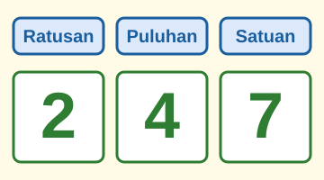

Tujuan belajar: kamu bisa membaca bilangan sampai 1.000, mengenal nilai tempatnya, dan membandingkannya.
Di toko ada 247 pensil. Bilangan 247 dibaca dua ratus empat puluh tujuh.
Angka 2 ada di tempat ratusan, angka 4 di tempat puluhan, dan angka 7 di tempat satuan.

| Bilangan | Ratusan | Puluhan | Satuan |
|---|---|---|---|
| 247 | 2 | 4 | 7 |
| 315 | 3 | 1 | 5 |
| 608 | 6 | 0 | 8 |
Membandingkan: 315 lebih besar dari 247, karena 3 ratusan lebih banyak dari 2 ratusan.
Memuat soal...
Buku Matematika untuk SD/MI Kelas II (Kemendikdasmen)
Di buku itu, cari bab tentang bilangan sampai 1.000.